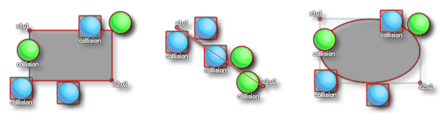
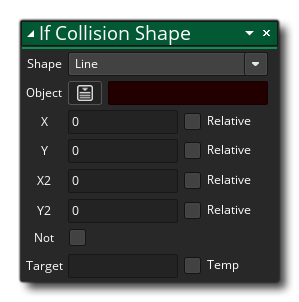

Descripción
Esta acción se usa para verificar y ver si hay una colisión con una instancia de un objeto dado dentro de un área con forma determinada o a lo largo de una línea. Usted da la forma (rectángulo, elipse o línea), el objeto a verificar, y luego proporciona las coordenadas para las esquinas superior izquierda e inferior derecha de la forma que se está utilizando, o en el caso de una línea, el inicio y posiciones finales Estas pueden ser posiciones absolutas dentro de la sala de juegos o posiciones relativas a la instancia que realiza la acción. Puedes ver cómo funciona esto en la siguiente imagen: 
Como puede ver, los resultados dependerán de la máscara de colisión de la instancia que se esté verificando, lo que significa que la instancia del objeto que está buscando debe tener un sprite asignado a la sprite_index, o un sprite asignado a la mask_index. Si no lo hace, estas funciones no lo detectarán, independientemente de si está dibujando un sprite o no. Vale la pena señalar que cualquier instancia que caiga completamente dentro de los límites establecidos para la forma de elipse o rectángulo también devolverá una colisión. La acción evaluará a true si se detecta una colisión, o false de lo contrario, aunque también se puede comprobar la bandera no para comprobar si no hay una colisión con el área en forma de dado, y la acción son entonces sólo como evaluar true si no se encuentran colisiones, de lo contrario se evaluará como false. También puede configurar la opción Excluir uno mismo para excluir la instancia de llamada de la verificación de colisión.
A continuación, puede marcar / desmarcar la opción para devolver la lista. Verificando esto significa que la acción creará y llenará una estructura de datos de lista con todas las instancias en colisión con la forma y establecerá la variable Objetivo a la ID de lista de DS. Cuando no está marcada, solo establecerá la variable Objetivo en un valor inferior a 0 cuando no se detecte una colisión, o el valor de ID único de una de las instancias de la colisión (tenga en cuenta que si varias instancias están en colisión, entonces no tiene forma de saber qué ID de instancia se devolverá cuando no se use una lista).
Si ha seleccionado devolver una lista (y la variable Objetivo no está configurada en Temp), también puede seleccionar la opción Objetivo libre. Cuando se establece en true, entonces la lista contenida en la variable de destino se destruirá y se creará una nueva lista (y se devolverá a la variable de destino) cada vez que llame la acción. De esta manera, puede reutilizar la misma variable sin preocuparse por las fugas de memoria, ya que, si no selecciona la opción Free Target, será responsable de destruir la lista antes de usar la variable nuevamente en la acción. Tenga en cuenta que, independientemente de si esta opción está marcada o no, si ha configurado la acción como Lista de retorno, la variable de destino siempre contendrá un ID de lista y, como tal, deberá liberarse cuando se destruya la instancia o la sala finaliza (puede usar el evento de limpieza para esto, por ejemplo, junto con la acción Estructura de datos gratuita ). Vale la pena señalar que puede configurar la opción Objetivo libre para usar una variable predefinida o una expresión, y así controlar cuando la estructura de datos de la lista se libera al establecer la variable en otro lugar (o tener diferentes resultados para la expresión) siempre que evalúa a true / false.
Finalmente, proporciona la variable de destino que desea que contenga el valor devuelto o el ID de lista. Si marca la variable Objetivo para mantener el valor devuelto como una variable Temp (local), la acción creará esta variable para mantener el valor devuelto solo hasta el final del evento, en este caso, la opción Objetivo libre no hace nada y usted será responsable de destruir la lista de DS si esa opción ha sido marcada. Si no se proporciona una variable de destino y la opción Lista de retorno está marcada, no se creará ninguna lista.
¡IMPORTANTE! Las colisiones solo se registrarán para aquellas instancias que tengan una máscara de colisión válida, es decir: tienen un sprite asignado a la sprite_index, o un sprite asignado a la mask_index. Si las instancias del objeto que se está verificando en esta acción no tienen máscara de colisión, la colisión no se detectará, independientemente de lo que la instancia esté dibujando en ese momento.
Tenga en cuenta que para agregar acciones a un bloque "si", se deben colocar al lado de la acción, como se muestra en la siguiente imagen:

Sintaxis de acción:
Argumentos:
Argumento Descripción Shape La forma de usar Object El objeto a verificar por instancias de x1 La posición x para empezar y1 La posición y para comenzar x2 La posición x para terminar en y2 La posición y para terminar en Free Target Se puede establecer en una variable o expresión, o se puede establecer en true / false para controlar la liberación de la memoria de lista cuando se reutiliza una variable de lista Target La variable de destino para el valor de retorno de la acción.
Ejemplo:

El código de bloqueo de acción anterior verifica una colisión con cualquier instancia del objeto "obj_Enemy" dentro de un círculo de 100px alrededor de la posición de las instancias de llamada. La acción genera una lista de todas las instancias encontradas en colisión y almacena el ID de lista en la variable de destino. Si la acción evalúa a true luego, la lista se recorre en bucle y cada instancia con su ID almacenada en la lista tiene su variable "hp" reducida en 1. La lista DS se libera.